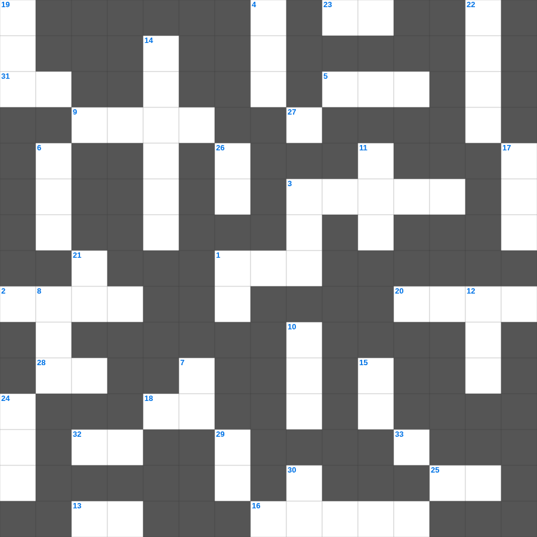

성경의 사랑장 (고전 13장)
📌 서비스 정의
십자가로세로는 교회 주보와 주일학교에서 사용할 수 있는 성경 기반 가로세로 퍼즐 서비스입니다. 성경 인물, 사건, 핵심 구절을 바탕으로 제작되었습니다. 온라인 풀이 및 인쇄 기능을 제공합니다.
성경의의 말씀을 퀴즈로 배우는 성경의 성경공부 자료입니다. 가로 힌트와 세로 힌트를 보고 35개의 단어를 맞춰보세요. 인쇄도 가능하고 정답 확인도 바로 되니 소그룹 모임이나 가정 예배 시간에도 활용하실 수 있습니다.

📝 가로 힌트
1. 노아의 방주에 비가 내린 일수
2. 예수님이 태어나신 마을
3. 강도를 만난 자의 진정한 이웃
5. 니고데모와 예수님의 대화 주제
9. 노동자 하루 품삯에 해당하는 은화
13. 네 이것을 공경하라
16. 탕자가 집을 나갔다가 돌아온 이야기
18. 새 예루살렘 성곽의 첫 번째 기초석
20. 느헤미야의 성벽 재건 기간
23. 동방 박사들이 드린 세 가지 예물 중 하나
25. 예수님이 구름을 타고 하늘로 올라가심
28. 여호와 이것: 치료하시는 하나님
31. 너희 죄를 서로 이것하며 병이 낫기를 위하여 서로 기도하라
32. 이것하게 하는 자는 하나님의 아들이라 일컬음을 받음
📝 세로 힌트
1. 하나님의 형상대로 지음 받은 존재
3. 예수님이 광야에서 금식하신 일수
4. 대제사장의 흉패에 박힌 열두 보석 중 하나
6. 예수님이 제자들의 발을 씻기신 일
7. 요셉이 보디발의 아내 유혹을 물리치고 간 곳
8. 삼손의 힘의 비밀을 알아낸 여인
10. 여호수아가 요단강을 건널 때 앞세운 것
11. 모세의 누나
12. 메시아의 탄생을 예언한 평화의 선지자
14. 기드온의 용사들이 사용한 도구
15. 성경 인물 중 가장 장사(힘이 센 사람)는?
17. 이 기적을 베푸신 분
19. 이스라엘 백성이 요단강을 건너 처음 도착한 성
21. 여호와 이것: 준비하시는 하나님
22. 오순절 다락방에서 성령이 임한 사건
24. 복음을 전하는 자
26. 사흘 만에 다시 살아나신 기적
27. 오직 정의를 이것 같이 흐르게 할지어다
29. 지성소와 성소를 가로막고 있던 천
30. 집을 나가 방탕하게 살다 돌아온 아들
🧩 이 퍼즐에서 배우는 내용
이 퍼즐은 성경의 사랑장 (고전 13장)의 핵심 단어와 개념을 자연스럽게 복습할 수 있도록 구성되었습니다. 주일학교 수업이나 개인 성경공부에서 학습 내용을 점검하는 용도로 바로 활용할 수 있습니다.
🧑🏫 교회 교육 자료 활용
이 퍼즐은 주일학교 교재 추천 자료로 활용할 수 있고, 주일학교 주보에 넣기 좋은 분량으로 구성되어 있습니다. 수업용 주일학교 교안에 활동지로 붙이거나, 예배 후 복습용 주일학교 공과교재로 바로 사용할 수 있습니다.
🏷️ 키워드
성경의 성경공부 자료, 성경의, 십자가로세로, 성경퀴즈, 말씀퀴즈, 가로세로퍼즐, 주일학교 교재 추천, 주일학교 주보, 주일학교 교안, 주일학교 공과교재